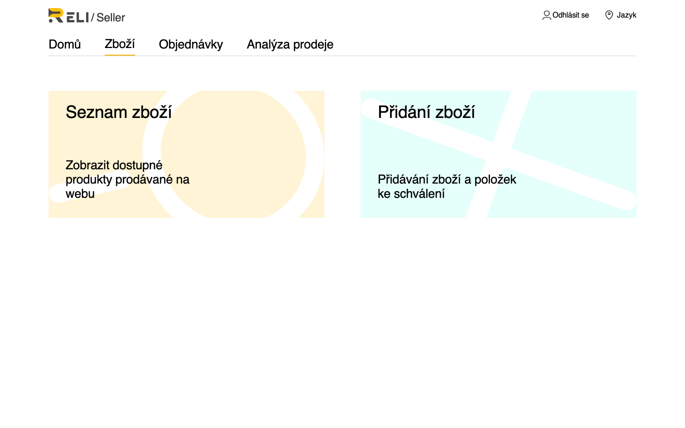
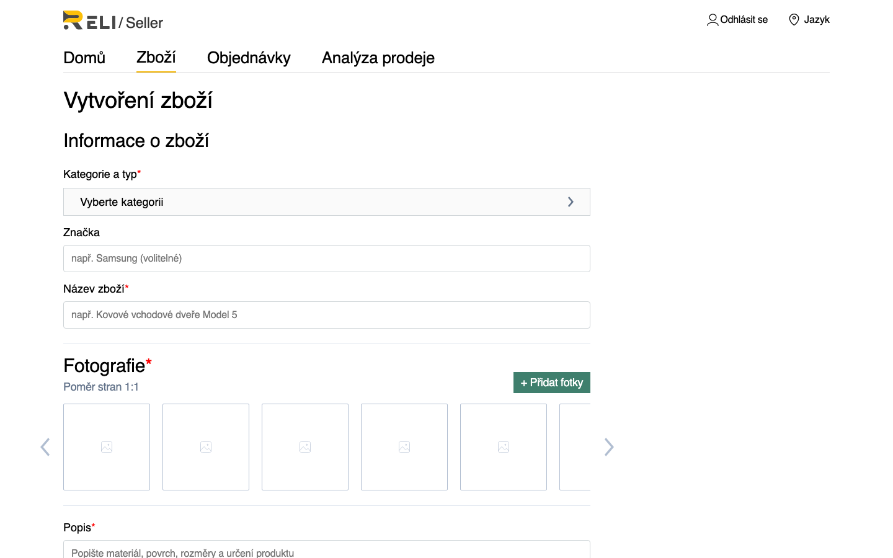
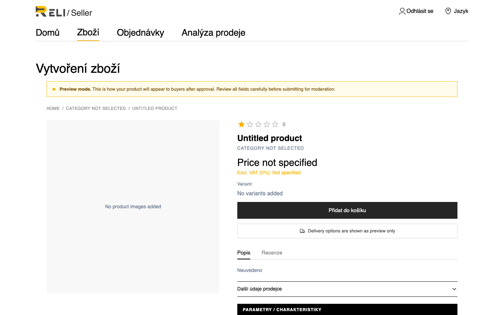
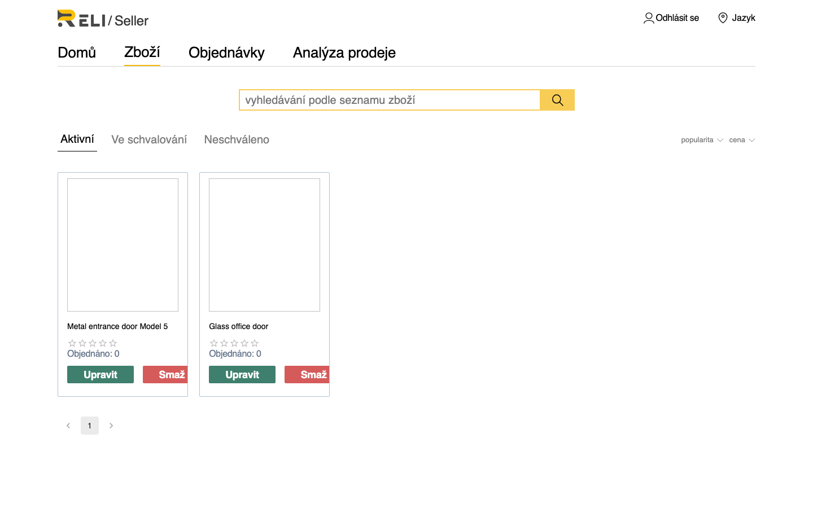

Jak přidat zboží do katalogu po schválení žádosti prodejce. Zboží prochází moderací před publikací.
Po přihlášení otevřete sekci Zboží. Na úvodní stránce jsou dostupné dvě akce:

Klikněte na Přidání zboží nebo přejděte na https://reli.one/seller/seller-create.
Část polí je stejná pro všechno zboží. Jiná část — atributy kategorie — se načte automaticky po výběru kategorie a může se lišit pro různé kategorie a podkategorie.
| Pole | Popis |
|---|---|
| Kategorie | Kategorie katalogu. Obvykle se vybírá konečná (listová) kategorie; v některých větvích je povoleno zboží i v nadřazené kategorii. |
| Název zboží | Název zboží |
| Popis | Popis zboží |
| Fotografie | Minimálně jeden obrázek (JPG, PNG, WebP) |
| Sazba DPH, % | Sazba DPH. Pokud pole zůstane prázdné, systém uloží hodnotu 0 %. |
| Název typu varianty | Název typu varianty (např. «Velikost», «Barva») |
| Varianty | Minimálně jedna varianta. U každé varianty jsou povinné: hodnota, cena, skladová zásoba, hmotnost balení a rozměry (délka, šířka, výška) — pro výpočet dopravy. |
Po výběru kategorie formulář načte schéma atributů. Do něj patří:
Povinné k vyplnění jsou pouze pole označené ve schématu jako required (typy: text, číslo, ano/ne, výběr ze seznamu). Pokud kategorie nemá povinné atributy, tento blok lze přeskočit. Při změně kategorie se schéma znovu načte — pole zkontrolujte znovu.

Po vyplnění formuláře klikněte na tlačítko Náhled ve spodní části stránky vytvoření zboží — otevře se obrazovka náhledu. Zkontrolujte popis, charakteristiky, varianty a obrázky, poté klikněte na Odesílání k moderaci.
Zboží získá stav Ve schvalování. Orientační čas moderace je přibližně 24 hodin. Po schválení se zboží objeví ve veřejném katalogu se stavem Aktivní.

| Problém | Řešení |
|---|---|
| Nenačte se schéma atributů kategorie | Znovu vyberte kategorii nebo obnovte stránku. Ujistěte se, že je vybrána kategorie, ve které je povoleno vytvářet zboží |
| Nejsou vidět potřebné atributy | Atributy závisí na kategorii: část je definována v nadřazené kategorii, část v podkategorii. Vyberte přesnou kategorii zboží |
| Tlačítko odeslání je neaktivní v náhledu | Zkontrolujte povinné atributy a varianty |
| Zboží dlouho «Ve schvalování» | Počkejte na rozhodnutí moderátora; při prodlevě > 48 h — kontaktujte podporu |
| Zboží zamítnuto | Opravte připomínky a odešlete znovu přes Upravit |
Veškeré vaše zboží je dostupné na stránce https://reli.one/seller/goods-list. Použijte záložky pro filtrování:
U každého zboží jsou dostupné akce Upravit a Smaž. Při úpravě schváleného zboží se jeho stav opět změní na Čeká na schválení — zboží dočasně zmizí z katalogu do opětovné moderace.
